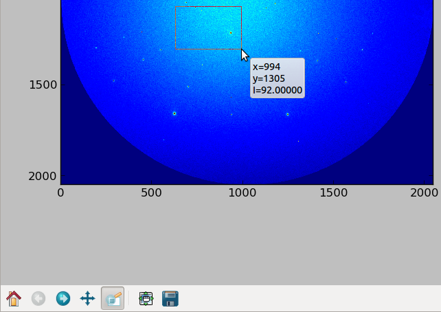

PeakSearchGUI¶
The module PeakSearchGUI.py is made to provide graphical tools to perform peak search and fitting. It enables also tools to get mosaic from a set of images.
Read Images and Binary files¶
First select the detector you have used for the data collection in the menu Calibration

Choose the correct camera to define the binary image file parameters

View an image by selecting in the Menu File/Open Image and Peak Search.

Then you obtain a board enabling to browse your set of images and to search for peaks

This board is composed by composed by 4 TOP tabs:
- parameters of display (View & color)
- Digital image processing (Image & Filter)
- Browse a set of images and select a ROI (Browse & crop)
- Mosaic or image-related monitor from a ROI over a set of images
And 5 tabs at the middle
- 1 Selection of local maxima search Method
- 2 Fitting procedure parameters
- 3 Peaks List Manager
View & Color¶
This panel helps for viewing images with an appropriate color LUT, getting some infos on pixels intensity on the whole image (distribution) or along line (line profilers)
Color Mapping (LUT) of the displayed image.
ShowHistodisplays the histogram of intensity distribution (nb of pixel as a function of pixel intensity)
intensities limits taken into account by the LUT

Open LineProfiler: 1D plot of pixel intensities along a movable-by-user line. AndEneable X Y Profiler: 1D plot of pixel intensities along X and Y from a clicked pixel position
Image & Filter¶
This panel supplies digital image processing tools to filter current image and particularly remove background.
Blur Image computes the image filtered by a gaussian kernel (similar to a low pass filter). By checking Substract blur as background the raw image minus the filtered image can be displayed and used for the local maxima (blob) search.
Calculate image with A and B allows with an arithmetical formula with A (current image) and B (additional image to be open) the computation of a new image A’ on which will be performed the local maxima (blob) searchChecking. By default this image will not be used to refine the position and shape of local maxima but the former and initial A image. Check use also for fit to apply the fit procedures on pixel intensities A’.
Save results saves on hard disk the A’ image with the header contains and format of A.

Browse & Crop¶
One can navigate on a set of images provided the images file name contains a numerical index with a constant prefix (e.g. myimage_0032.ccd). Navigation with button with small step index-1 and index+1 corresponds to consecutive images collected with time or along a line on sample. Navigation with button with larger step (Nb of images per line (step index)) index-10 and index+10 (for instance with larger step equals to 10) permits to look at the images collected along the direction perpendicular to the direction corresponding to the small step.
The Go To index button allows to read directly an image with an other in the same dataset. Auto index+1 button will display the next image and wait for it if it is not already in the folder.

To navigate and display faster the image when browsing on a particular region of interest (ROI) of the images, you can crop the data (CropData) by specifying the half sizes (boxsize) of the cropping box in the two directions.

Mosaic & Monitor¶
Several counters can be defined from pixel intensities in the same ROI (centered a clicked pixel with half box sizes given by user) over a set of images.
- Mosaic: Recompose a 2D raster scan from the selected ROI of each images as a function of image index
- Mean Value: plot a 1D graph or a 2D raster scan from the mean pixel value in the selected ROI of each images as a function of image index
- Max Value: plot a 1D graph or a 2D raster scan from the maximum pixel value in the selected ROI of each images as a function of image index
- Peak-to-peak Value (or ‘peak to valley’): plot a 1D graph or a 2D raster scan from the largest pixel amplitude value in the selected ROI of each images as a function of image index
- Peak position: plot two 1D graphes of X and Y peak position of the peak in the selected ROI of each images as a function of image index
Plot Tools¶
The standard toolbar is provided by the graphical ‘matplotlib’ library with the following features:
A ROI can be set to zoom in the data.
This ROI can be moved easily with the pan button

When hovering the mouse on the image pixel position and corresponding intensity are displayed

Previous selected ROIs are stored and can be recalled by arrows (
Homeicon recalls the initial full image)
Local Maxima or Blob Search¶
To guess the initial parameters fitting, 3 methods leads to a list of local maxima (or blobs)

Method 1: pixels above a threshold on raw image¶
The basic method consists in considering every pixel higher than intensityThreshold as a local maxima pixel.
If intensityThreshold is too high you will get only few pixels at the submit of laue spots.
If intensityThreshold is too small you will too much pixels that you may stuck the software.
MinimumDistance is the smallest distance separating two local maxima.
A good habit is too check the highest background level (e.g close to the image centre) and set intensityThreshold to a larger value. But even in this case if (fluorescence) background varies a lot, you will miss peaks whose maximum intensities are below the threshold… This is why removing the background is mandatory.
Method 2: hottest pixel in a box (by array shift)¶
Second Method finds the hottest pixel in a small box given by PixelNearRadius. It shifts the whole data array in 8 directions and determines every pixel hotter than the others lying in these 8 directions.
The thresholding with the IntensityThreshold level is performed on the intensity of these hot pixels with respect to local background level (set to the lowest pixel intensity in the box around the hot pixel).
One drawback of this method is that 2 hot pixels at the top of the peak but with strictly the same intensity are not detected (coincidence or more likely when peak is saturated).

Method 3: Peak enhancement by convolution on raw image¶
This is the fastest method as soon as you have found the few parameters value (for batch). The Raw image data (unsigned 16 bits integers) are convolved by a 2D gaussian (mexican-hat-like) kernel. The resulting convolved Image (floats) have intense region (called blobs) where pixel intensity 2D profile on raw data is similar to the kernel intensity profile.
A first threshold with the level ThresholdConvolve (float) allows to select enhanced blob above a background. An good estimate of ThresholdConvolve value can be found by means of the pixel intensity histogram (ShowHisto): it corresponds to the (float) intensity that separates the hottest pixel population that belong to the peak (large abscisssa value) from the weakest one that belong to background.
With this blobs list, a second thresholding at Intensity Threshold (raw data) level is performed in the raw data pixel intensity with respect to local background level (like in method 2).
PixelNearRadius value enables the user to reject too much closed spots.
Max.Intensity value is used for the display of the convolved Image by clicking on Show Conv. Image. Thresholding can be visualize by checking Show thresholding.

Peak Position Fit¶
The goal of the peak search is to have systematic values of Laue peaks and intensities. You can decide to fit or not the blob found. The Button Search All Peaks launches the local maxima chosen method and apply a fitting procedure (or not) to each found blob. A general peak list is built.
By clicking close to a Laue spot in the image and clicking on the Fit Peak button, a gaussian fit is performed. This result can be added to the current general peak list with the button Add Peak. Clicking close to a Laue spot that belongs to the peak list (blue circle marker on top of the image) and pressing Remove Peak removes the laue spot from the list.

Parameters to choose the fitting model or no fit and to reject or not the fitting result of each peak according to deviation from the initial guessed position (FitPixelDeviation).


Module functions¶
The next documentation comes from the docstring in the header of function or class definition.
PeakSearchGUI.py (PeakSearchBoard)¶
-
class
LaueTools.GUI.PeakSearchGUI.ViewColorPanel(parent)[source]¶ class to play with color LUT and intensity scale
-
restrictxylimits_to_imagearray(xmin, ymin, xmax, ymax)[source]¶ return compatible extremal value of x,y xmin, ymin, xmax, ymax
-
getlineprofiledata(x0, y0, x2, y2)[source]¶ get pixel intensities array between two points (x0,y0) and (x2,y2)
return dataX, dataY
-
updateLineXYProfile(event)[source]¶ recompute line section intensity profile horizontal (x, zx) vertical (y, zy)
-
-
class
LaueTools.GUI.PeakSearchGUI.FilterBackGroundPanel(parent)[source]¶ class to handle image background tools
-
onComputeBlurImage(_)[source]¶ Compute background, blurred, filtered or low frequency spatial image from current image
set self.blurimage
-
OnSwitchBlurRawImage(_)[source]¶ set viewing of raw image (- background) or background (=filtered image)
-
onSaveBlurImage(_)[source]¶ save on hard disk blurred or background image obtained from current image
-
onSaveFormulaResultImage(_)[source]¶ save image on hard disk of data obtained by arithmetical formula
-
-
class
LaueTools.GUI.PeakSearchGUI.BrowseCropPanel(parent)[source]¶ class to handle crop operation on images
-
class
LaueTools.GUI.PeakSearchGUI.PlotPeakListPanel(parent)[source]¶ panel class to handle peaks list within GUI
-
class
LaueTools.GUI.PeakSearchGUI.findLocalMaxima_Meth_1(parent)[source]¶ class of method 1 for local maxima search (intensity threshold)
-
class
LaueTools.GUI.PeakSearchGUI.findLocalMaxima_Meth_2(parent)[source]¶ class of method parameters for 2nd method of local maxima(shifted arrays)
-
class
LaueTools.GUI.PeakSearchGUI.findLocalMaxima_Meth_3(parent)[source]¶ class of method 3 for local maxima search (convolution by a mexican hat kernel)
-
class
LaueTools.GUI.PeakSearchGUI.PeakListOLV(parent)[source]¶ panel embedding an ObjectListViewer from ObjectListView module
need of: self.grangranparent.peaklistPixels self.grangranparent.onRemovePeaktoPeaklist self.grangranparent.OnReplot self.grangranparent.framedim and lot of other things with mainframe…
-
class
LaueTools.GUI.PeakSearchGUI.MainPeakSearchFrame(parent, _id, _initialParameter, title, size=4)[source]¶ Class to show CCD frame pixel intensities and provide tools for searching peaks
-
create_main_panel()[source]¶ Creates the main panel with all the controls on it: * mpl canvas * mpl navigation toolbar * Control panel for interaction
-
line_select_callback(eclick, erelease)[source]¶ eclick and erelease are the press and release events
-
CurrentFileIsReady()[source]¶ return True if self.imagefilename is in folder and entire (correct size)
-
setfilename()[source]¶ set filename from self.imagefilename, self.imageindex, CCDLabel=self.CCDlabel
-
OnLargePlus(_)[source]¶ increase self.imageindex by self.stepindex (vertical descending in sample raster scan) and read new image and plot
-
OnLargeMinus(_)[source]¶ decrease self.imageindex by self.stepindex (vertical ascendindg in sample raster scan) and read new image and plot
-
OnPlus(_)[source]¶ increase self.imageindex by 1 (horizontal ascending to the right in sample raster scan) and read new image and plot
-
OnMinus(_)[source]¶ decrease self.imageindex by 1 (horizontal descending to the left in sample raster scan) and read new image and plot
-
onChangeIndex_slider_imagevert(_)[source]¶ plot new image obtained by new index changed by vertical (slow axis) slider
-
read_data(secondaryImage=False, secondaryImagefilename=None)[source]¶ read binary image file
- if secondaryImage update
- self.dataimage_ROI_B
- else update
- self.dataimage_ROI
-
Show_ConvolvedImage(event, datatype='Convolved Image')[source]¶ set displayed data to be convolved data
-
readdata_updateplot_aftercrop_uncrop()[source]¶ read data and update data to be displayed and redraw
-
onMotion_ToolTip(event)[source]¶ tool tip to show data when mouse hovers on plot Some pixels at the image border could not be detected
-
onFitOnePeak(_)[source]¶ fit one peak centered on where user has clicked
in displayed image coordinates: self.centerx, self.centery
-
onRemoveAllPeakstoPeaklist(_)[source]¶ remove all spots of the peaks list and update the plot (remove circular markers)
-